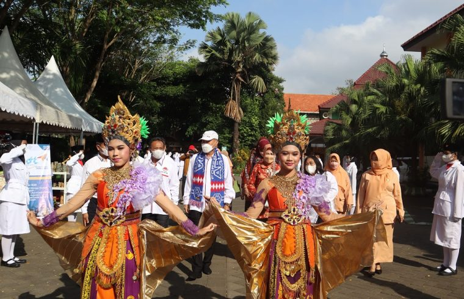

SMKN 1 KEPANJEN MENJADI TUAN RUMAH PELANTIKAN DAN PENGUKUHAN PERGATSI JATIM YANG DIHADIRI KEPALA DINAS PENDIDIKAN WAHID WAHYUDI

Kamis (01/09/22) SMKN 1 Kepanjen menjadi tuan rumah untuk pengukuhan dan pelantikan pengurus PERGATSI (Persatuan Gateball Seluruh Indonesia) Jawa Timur dan Talkshow Jatim Cerdas. Dihadiri oleh Kepala Dinas Pendidikan Jawa Timur, Bapak Dr. Ir. Wahid Wahyudi, MT acara berlangsung di Lapangan Indoor SMKN 1 Kepanjen. Kehadiran Kadisdik Jatim ke Kanesa ini disambut hangat oleh perwakilan MKKS Kab. Malang dan Kepala Cabang Dinas diiringi oleh Pasukan Paskibra dan Penari. Adapun terdapat perwakilan 16 daerah yang akan dilantik, diantaranya Kabupaten Malang, Kabupaten Blitar, Pacitan, Jombang, Lamongan, Ponorogo, Magetan, Sampang, Madiun, Ngawi, Bojonegoro, Tuban, Trenggalek, dan Kota Blitar. Kemudian Kota Madiun dan Kota Mojokerto.
Sekitar pukul 08.45 WIB Bapak Wahid memasuki lokasi acara dengan disambut oleh Hadrah BDI Kanesa sembari membagikan santunan pada anak yatim. Acara dimulai dengan menyanyikan lagu Indonesia Raya, pembacaan Doa dan Sambutan Topeng Malangan. Selanjutnya ialah sambutan-sambutan, mulai dari sambutan oleh Kacabdin, KONI hingga Kadisdik. Terakhir adalah acara inti yakni pelantikan dan pengukuhan pengurus Pergatsi masing-masing daerah oleh Bapak Wahid Wahyudi.